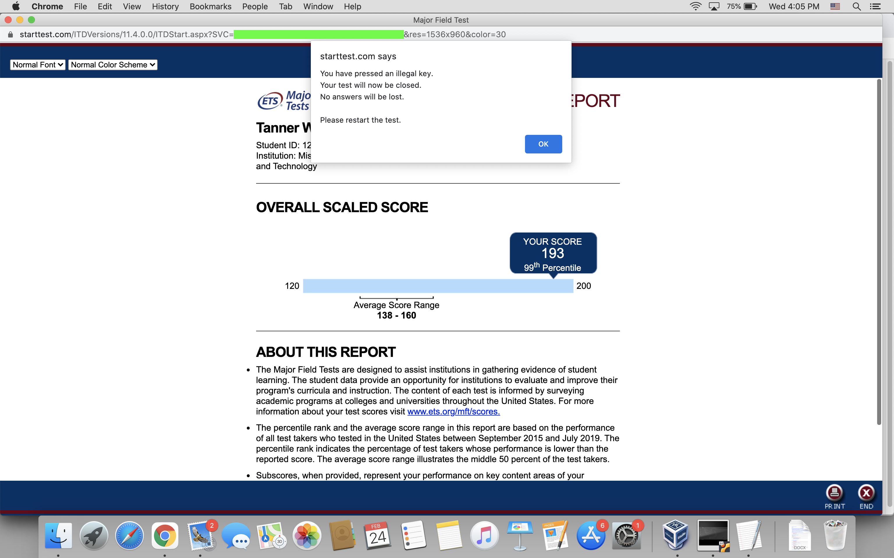
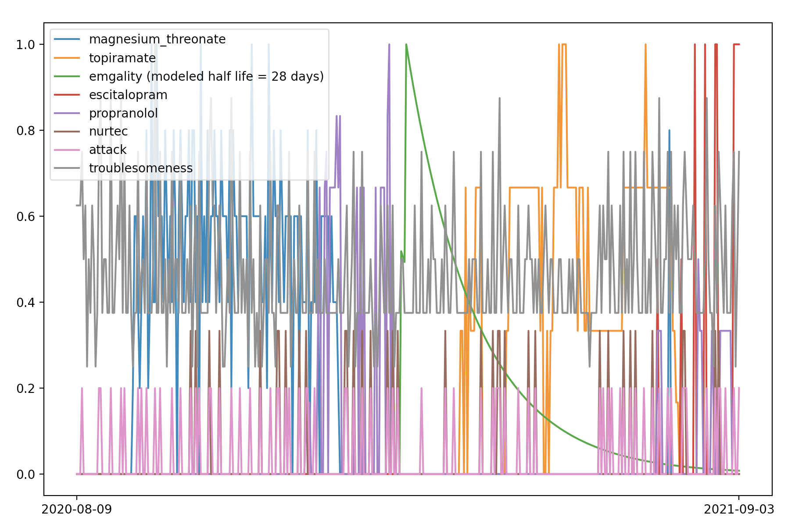

In May 2021 I graduated from Missouri University of Science and Technology, the university in Rolla, Missouri. I now have a Bachelor's degree in Computer Science. One of the purposes of this page is to publicly provide evidence of my graduation. My GPA was 3.977/4.0. When I was at the university, I performed very well on tests, but I could not handle heavy workloads. In my last semester I took the Major Field Test, which is required for Computer Science seniors. I was able to see my results afterward, and here is what I saw:
99th percentile is the interesting information there.
On June 19, 2021, my diploma arrived in the mail along with official transcripts. Here is my diploma:
Immediately after graduating, I started a job. I do not want to publicly post the details of the job at this time (June 2021).
I have a health problem characterized by pain in my forehead every hour of every day. Here are some treatments I have tried: sumatriptan, amitriptyline, Nurtec (rimegepant), propranolol, Emgality (galcanezumab), topiramate. I am currently (2021-06-20) writing down my health experiences in a Google sheet, including almost everything I eat, multiple numbers describing my condition, lots of text, and all medication I take. This has helped me show effects of some medications. I have also found that what I eat has little effect on my health other than making me vomit sometimes. I started having migraine headaches a few years ago and they are probably related to the persistent head pain. Multiple of the treatments I have listed have been very effective for treating the migraine headaches, so the migraine headaches are virtually cured. Nurtec has been the most effective. But no treatment has affected the persistent head pain at all. The migraine headaches started gradually around 2018, and the persistent head pain started more recently.
Here is a graph I made from some of the data I have collected:
